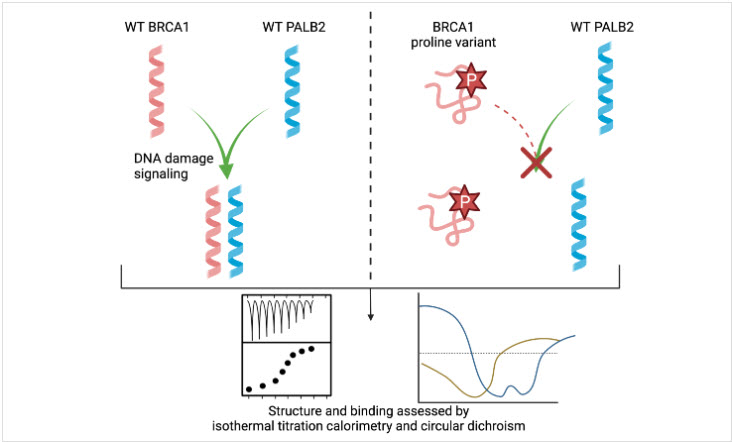
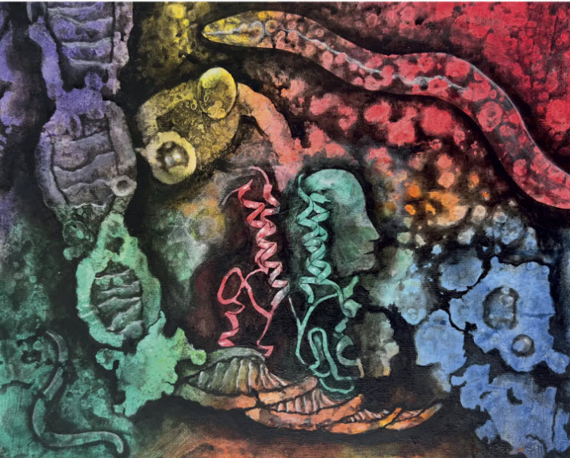

Research
Reading risk in the structure of BRCA1
Some inherited BRCA1 changes clearly raise cancer risk. Most are still question marks. Our job is to read the answer in the protein itself.
The question
A test result that says “unknown”
BRCA1 is one of the cell's repair crew leaders: when DNA breaks, BRCA1 helps organize the fix. When an inherited mutation stops it from doing that job, the risk of breast and ovarian cancer climbs. That is why genetic testing for BRCA1 matters — and why an unclear result is so hard. Most of the changes found in BRCA1 are variants of unknown significance: we can see the change, but we can't yet say whether it is harmful. Behind each of those is a person trying to make a real decision.
The way to resolve the uncertainty is to ask a direct question about the protein: with this change, does BRCA1 still work? Because a protein's job depends on its shape, we can answer that by studying structure and function in the lab. We take two complementary approaches.
Approach one
The molecular handshake
BRCA1 can't repair DNA alone. It has to clasp a partner protein, PALB2, through a pair of intertwined corkscrew-shaped helices — a “coiled coil.” That clasp is what brings the rest of the repair machinery to the break. Disrupt the clasp, and repair fails.
We built a fast, inexpensive test that measures the faint pulse of heat released when BRCA1 and PALB2 grab each other, so we can ask of any variant: does it still hold on? After checking the test against changes already known to be harmful, we used it to flag two previously uncharacterized variants that completely break the grip — marking them as likely dangerous. We also found a clean rule: a single “kink” amino acid (proline) collapses the helix and breaks binding anywhere in this region, even away from the contact point. The payoff for patients: this screen runs in about four days, can be performed by undergraduates in most biochemistry labs, and could help prioritize which variants need deeper clinical study.
That toolkit is growing. We’ve developed a way to clip a small fluorescent tag onto this stretch of BRCA1 — without disturbing how it works — so we can watch it directly and screen many variants at once. And we’re now pointing the same binding methods at BRCA1’s partnerships with other critical tumor suppressors. For a student, that means joining a project that runs from the bench to a published answer, helping map the wider network of molecular handshakes that keeps cells from turning into cancer.

Approach two
The off switch — tested in a living animal
BRCA1 has a second job beyond repair: helping switch certain genes off. It does this by clipping a tiny tag onto histone H2A — one of the spool proteins that DNA winds around. Tag the spool, and that stretch of DNA stays wound up and quiet. BRCA1 doesn’t do this alone: its constant partner, BARD1, is the piece that lets the pair grab the spool — and we solved the structure that shows exactly how BARD1 aims the tag at the right place.
In families with inherited breast cancer, we found something telling. Some carried BARD1 changes that, by every other measure, left the enzyme working — yet specifically stopped it from gripping the spool, so H2A went untagged. Without that off switch, breast cells over-produce two enzymes that turn estrogen into DNA-damaging byproducts. Put the working tag back and the genes quiet down; put a cancer-linked change back and they don’t. That one tag sits inside a much larger map of what BRCA1/BARD1 marks across the cell, which we laid out in a 2021 review.
Then we showed the whole system is portable. The worm C. elegans carries its own BRCA1 and BARD1, and we proved they tag H2A and silence the same family of genes — so a tiny, fast-growing animal can stand in for the human machine. Worms can even live without BRCA1, which mammals cannot, letting us follow its job across a whole lifetime. Working with worms also means keeping shared tools honest: when a widely-used strain didn’t behave the way the field assumes, we published the caution so other labs wouldn’t build on a cracked foundation.
Right now we’re using these worms to ask how BRCA1 and BARD1 protect fertility in a whole organism — a question you can’t put to a person, but can put to a worm. If you want to connect a single molecular tag all the way up to the health of a living animal, this is the bench for it.

How we watch a protein
Seeing shape, and seeing it change
A protein is far too small to watch under a microscope. Instead we read its structure indirectly — measuring how it folds, what it binds, and how a single mutation shifts the picture — with a toolkit of genetics, biochemistry, and biophysics.
Want the details?
Every claim above comes from peer-reviewed work you can read yourself.